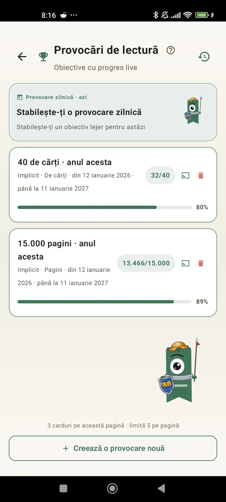

Cunoaște-te ca cititor
Provocări, bingo, widgeturi și multe altele ca să profiți la maximum de lectură. Nou în 3.7: widgeturi pentru provocări și bingo.

Provocări de lectură
Stabilește obiective pe pagini, serii sau genuri. Până la 15 provocări active gratuit, nelimitate cu Pro. Plus o provocare zilnică personalizabilă care nu intră în limită.

Provocarea zilei
Un obiectiv nou în fiecare zi. Termină provocarea înainte de miezul nopții ca să-ți păstrezi seria.

Bingo de lectură
Două bingo noi în fiecare lună, cu căsuțe tematice. Completează rânduri, coloane sau cartonul întreg.

Rezumatul săptămânii
În fiecare luni, un instantaneu al săptămânii tale: pagini citite, timp total, serie și cum se compară cu săptămâna precedentă.

Recapitularea lunii
La sfârșitul lunii, Lecturameter face totalul: pagini, timp, cărți terminate, ritmul tău zi cu zi și cartea lunii.

Widget Bingo Pro
Cartonul de bingo al lunii, mereu la vedere, cu căsuțele completate și liniile făcute.

Widget Carte Gratuit
Vezi cartea pe care o citești chiar pe ecranul principal: copertă, titlu, autor, pagini și procentul de progres, mereu actualizate. Se poate redimensiona oriunde vrei.
Pe bune, aplicația asta e ca o terapie, de la câteva pagini pe zi am ajuns la vreo 20 de pagini pe zi și tot crescFeedback de la un utilizator, trimis prin e-mail

Comparație lunară Pro
O privire rapidă asupra ultimelor luni fără să deschizi aplicația. Bare cu paginile fiecărei luni, cu cea curentă evidențiată, ca să vezi dintr-o privire dacă îți merge mai bine sau mai rău luna asta decât luna trecută.

Widget Provocări Pro
Provocările tale active și progresul lor pe ecranul principal. Alege-le pe cele afișate din ecranul Provocări.